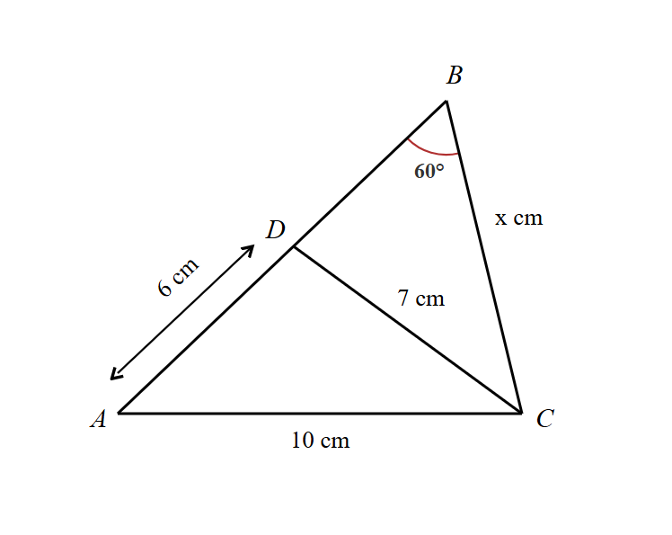
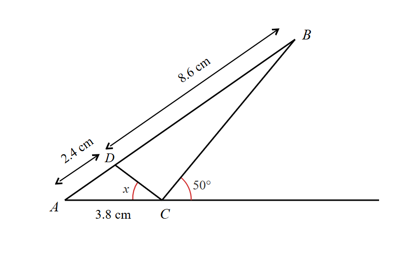
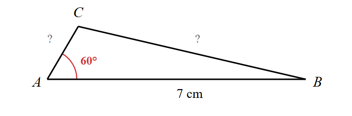
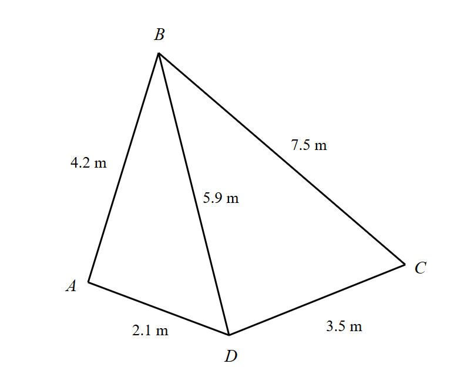
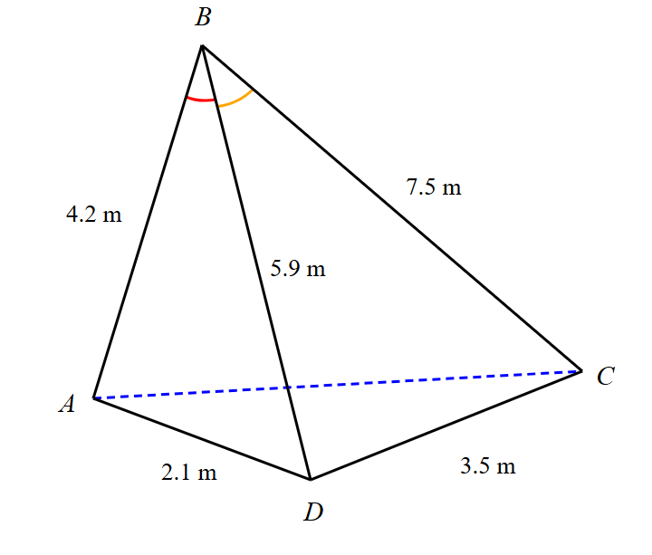
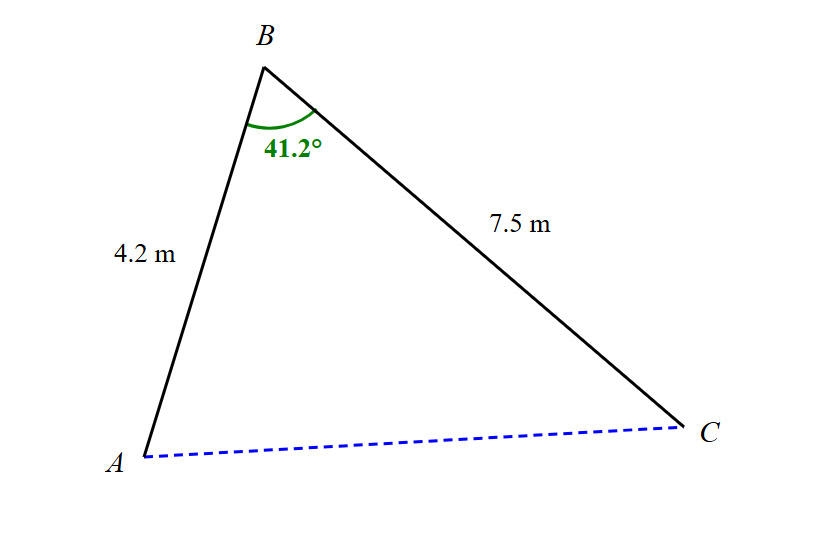

Using the fundamental property that all angles in a triangle sum to 180°.
Step 4: Use Cosine Rule to find side AC
Now that we have all three angles, we can use the Cosine Rule:
Using: AC² = BC² + AB² − 2(BC)(AB) cos B
(AC)² = (10.2)² + (8.5)² − 2(10.2)(8.5) cos 108°
(AC)² = 104.04 + 72.25 − 173.4 × (−0.3090)
(AC)² = 176.29 + 53.56
(AC)² = 229.85
AC = √229.85 = 15.2 cm (to 3 s.f.)
The Cosine Rule allows us to find the third side using two sides and the included angle.
Step 5: Calculate the area of the triangle
Using the area formula with two sides and the included angle:
Area =
12
× AB × BC × sin B
Area =
12
× 8.5 × 10.2 × sin 108°
Area = 41.2 cm² (to 3 s.f.)
We use the two known sides (AB and BC) with the included angle B to find the area.
✨ Final Answers:
∠ABC = 108°, ∠ACB = 32.4°
AC = 15.2 cm
Area = 41.2 cm² ✨
Question 2: Bearing and distance problem
A hiker walks due north from A and after 8 km reaches B. She then walks a further 8 km on a bearing of 120° to C.
Work out a) the distance from A to C and b) the bearing of C from A.
Solution:
📐 Triangle Formulas
Cosine Rule:a² = b² + c² − 2bc cos A
Sine Rule:
asin A
=
bsin B
=
csin C
Area of Triangle: Area =
12
ab sin C
Angle Sum of a Triangle:A + B + C = 180°
Angles on Straight Line: Adjacent angles = 180°
Note: Review previous sections for use of formulas
Step 1: Draw the bearing diagram and identify angles
Given from the question:
• Point A is the starting position
• Hiker walks due north 8 km to B (bearing 000°)
• From B, walks 8 km on bearing 120° to C
From the diagram:
• AB = 8 km (due north)
• BC = 8 km (on bearing 120° from B)
• At B, the angle inside the triangle is 180° − 120° = 60°
• We need to find AC and the bearing of C from A (The bearing is the angle measured clockwise from North at A to the line AC)
Bearings are measured clockwise from north.
Part (a): Find the distance AC
Step 2: Use Cosine Rule to find AC
We have:
• Side AB = 8 km
• Side BC = 8 km
• Angle B = 60°
Using: AC² = BC² + AB² − 2(BC)(AB) cos B
(AC)² = (8)² + (8)² − 2(8)(8) cos 60°
(AC)² = 64 + 64 − 128 × 0.5
(AC)² = 128 − 64
(AC)² = 64
AC = √64 = 8 km
The Cosine Rule gives us the third side directly.
✨ Part (a): AC = 8 km ✨
Part (b): Find the bearing of C from A
Step 3: Use Sine Rule to find angle BAC
Using:
sin ABC
=
sin BAC
sin A8
=
sin 60°8
sin A = sin 60°
sin A = 0.8660...
A = 60°
Since all sides are equal (8 km each), this is an equilateral triangle, so all angles are 60°.
✨ Part (b): Bearing of C from A = 060° ✨
Question 3: Ambiguous case - two possible positions
Two radar stations A and B are 16 km apart and A is due north of B. A ship is known to be on a bearing of 150° from A and 10 km from B. Show that this information gives two positions for the ship, and calculate the distance between these two positions.
Solution:
📐 Triangle Formulas
Cosine Rule:a² = b² + c² − 2bc cos A
Sine Rule:
asin A
=
bsin B
=
csin C
Area of Triangle: Area =
12
ab sin C
Angle Sum of a Triangle:A + B + C = 180°
Angles on Straight Line: Adjacent angles = 180°
Note: Review previous sections for use of formulas
Step 1: Draw the bearing diagram and identify the triangle
Given from the question:
• A is due north of B, so AB = 16 km
• Ship is on bearing 150° from A
• Ship is 10 km from B
• Let S₁ and S₂ be the two possible positions of the ship
From the diagram:
• The angle at A inside the triangle = 180° − 150° = 30°
• The ship must also be 10 km from B, giving two possible positions S₁ and S₂
This is an ambiguous case where the sine rule gives two possible solutions.
Step 2: Use Sine Rule to find angle at B
In triangle ABS:
• AB = 16 km
• BS = 10 km
• ∠BAS = 30°
Using:
sin BAB
=
sin ABS
sin B16
=
sin 30°10
sin B =
16 × sin 30°10
sin B =
16 × 0.510
sin B = 0.8
Setting up the Sine Rule with the known sides and angle.
Step 3: Find the two possible angles at B
Since sin B = 0.8, there are two possible angles:
First solution: B₁ = sin−1(0.8) = 53.13°
Second solution: B₂ = 180° − 53.13° = 126.87°
The sine function gives two possible angles: one acute and one obtuse. Both create valid triangles in this scenario.
Step 4: Find the distance between S₁ and S₂
We can use the Cosine Rule in triangle BS₁S₂:
• BS₁ = 10 km
• BS₂ = 10 km
• Angle S₁BS₂ = difference between the two angle B values
∠S₁BS₂ = B₂ − B₁ = 126.87° − 53.13° = 73.74°
Note: Using the Cosine Rule with two sides from B and the included angle.
The two ship positions are 12 km apart, found using the angle between the two possible positions at point B.
✨ Final Answer:
The distance between these positions is 12 km ✨
Question 4: Finding a side using angles on a straight line

In the diagram above, find the value of x.
Solution:
📐 Triangle Formulas
Cosine Rule:a² = b² + c² − 2bc cos A
Sine Rule:
asin A
=
bsin B
=
csin C
Area of Triangle: Area =
12
ab sin C
Angle Sum of a Triangle:A + B + C = 180°
Angles on Straight Line: Adjacent angles = 180°
Note: Review previous sections for use of formulas
Step 1: Find angle ADC using Cosine Rule in triangle ADC
In triangle ADC:
• AD = 6 cm
• DC = 7 cm
• AC = 10 cm
Using Cosine Rule: AC² = AD² + DC² − 2(AD)(DC) cos(∠ADC)
10² = 6² + 7² − 2(6)(7) cos(∠ADC)
100 = 36 + 49 − 84 cos(∠ADC)
100 = 85 − 84 cos(∠ADC)
84 cos(∠ADC) = −15
cos(∠ADC) =
−1584
= −0.1786
∠ADC = cos−1(−0.1786) = 100.3°
We use the Cosine Rule to find angle ADC in triangle ADC.
Step 2: Find angle BDC using angles on a straight line
Points A, D, and B lie on a straight line (AB).
Therefore: ∠ADC + ∠BDC = 180° (angles on a straight line)
∠BDC = 180° − ∠ADC
∠BDC = 180° − 100.3°
∠BDC = 79.7°
Angles on a straight line sum to 180°.
Step 3: Use Sine Rule in triangle BDC to find x
In triangle BDC:
• ∠DBC = 60°
• DC = 7 cm
• ∠BDC = 79.7°
• BC = x cm
Using Sine Rule:
BCsin ∠BDC
=
DCsin ∠DBC
xsin 79.7°
=
7sin 60°
x =
7 × sin 79.7°sin 60°
x =
7 × 0.98380.8660
x =
6.8870.8660
x = 7.95 cm
We use the Sine Rule to find the unknown side x in triangle BDC.
✨ Final Answer: x = 7.95 cm (to 3 s.f.) ✨
Question 5: Finding an angle using Cosine and Sine Rules

In the diagram above, find the value of x (angle DCA).
Solution:
📐 Triangle Formulas
Cosine Rule:a² = b² + c² − 2bc cos A
Sine Rule:
asin A
=
bsin B
=
csin C
Area of Triangle: Area =
12
ab sin C
Angle Sum of a Triangle:A + B + C = 180°
Angles on Straight Line: Adjacent angles = 180°
Note: Review previous sections for use of formulas
Step 1: Identify the given information in triangle ABC
In △ABC, AB = 11 cm, AC = 3.8 cm, ∠ACB = 130° (180° − 50°)
We use the angles on a straight line property to find the interior angle ACB.
Step 2: Find angle ABC using Sine Rule in triangle ABC
We use the angle sum property of triangles to find angle BAC (angle A).
Step 4: Use Cosine Rule in triangle ADC to find DC
∠BAC = ∠DAC
So, in △ADC, AD = 2.4 cm, AC = 3.8 cm, ∠DAC = 34.654...°
Using the Cosine Rule:
DC² = AD² + AC² − 2(AD)(AC) cos ∠DAC
So DC² = 2.4² + 3.8² − 2 × 2.4 × 3.8 × cos 34.654...°
= 5.1959...
⇒ DC = 2.279...
We apply the Cosine Rule to triangle ADC with the angle BAC (which is the same as angle DAC) to calculate the length of side DC.
Step 5: Use Sine Rule in triangle ADC to find x
Using the Sine Rule:
sin xAD
=
sin ∠DACDC
sin x =
2.4 sin 34.654...°DC
= 0.598 69... x = 36.8° (to 3 s.f.)
Finally, we use the Sine Rule in triangle ADC to find angle x (angle DCA).
✨ Final Answer: x = 36.8° (to 3 s.f.) ✨
Question 6: Find lengths and area using perimeter constraint
The perimeter of △ABC = 15 cm. Given that AB = 7 cm and ∠BAC = 60°, find the lengths of AC and BC and the area of the triangle.
Solution:
📐 Triangle Formulas
Cosine Rule:a² = b² + c² − 2bc cos A
Sine Rule:
asin A
=
bsin B
=
csin C
Area of Triangle: Area =
12
ab sin C
Angle Sum of a Triangle:A + B + C = 180°
Angles on Straight Line: Adjacent angles = 180°
Note: Review previous sections for use of formulas

Step 1: Express BC in terms of AC using the perimeter
Given:
• Perimeter = AB + AC + BC = 15 cm
• AB = 7 cm
• ∠BAC = 60°
From the perimeter equation:
7 + AC + BC = 15
BC = 15 − 7 − AC
BC = 8 − AC
We express BC in terms of AC to have one unknown variable instead of two.
Step 2: Use Cosine Rule to set up equation for AC
In triangle ABC, using Cosine Rule with side BC opposite angle A:
BC² = AB² + AC² − 2(AB)(AC) cos(∠BAC)
We use the Cosine Rule to create an equation involving AC.
Step 3: Find BC
Using BC = 8 − AC:
BC = 8 −
53
BC =
243
−
53
BC =
193
cm
BC ≈ 6.33 cm
We substitute AC back into our expression for BC.
Step 4: Find the area of triangle ABC
Using the area formula with two sides and included angle:
Area =
12
× AB × AC × sin(∠BAC)
Area =
12
× 7 ×
53
× sin 60°
Area =
12
× 7 ×
53
×
√32
Area =
35√312
cm²
Area ≈ 5.05 cm²
We use the formula Area = ½ab sin C with the known sides and angle.
✨ Final Answer:
AC ≈ 1.67 cm
BC ≈ 6.33 cm
Area ≈ 5.05 cm² ✨
Question 7: Quadrilateral angles and area
A flower bed is in the shape of a quadrilateral as shown in the diagram.
a) Find the sizes of angles DAB and BCD. b) Find the total area of the flower bed. c) Find the length of the diagonal AC.

Solution:
📐 Triangle Formulas
Cosine Rule:a² = b² + c² − 2bc cos A
Sine Rule:
asin A
=
bsin B
=
csin C
Area of Triangle: Area =
12
ab sin C
Angle Sum of a Triangle:A + B + C = 180°
Angles on Straight Line: Adjacent angles = 180°
Note: Review previous sections for use of formulas
Part a) Find angles DAB and BCD
Step 1: Use Cosine Rule in triangle ABD to find angle DAB
In △ABD, we have AB = 4.2 m, AD = 2.1 m, BD = 5.9 m
Using the Cosine Rule:
BD² = AB² + AD² − 2(AB)(AD) cos ∠DAB
5.9² = 4.2² + 2.1² − 2(4.2)(2.1) cos ∠DAB
34.81 = 17.64 + 4.41 − 17.64 cos ∠DAB
34.81 = 22.05 − 17.64 cos ∠DAB
17.64 cos ∠DAB = 22.05 − 34.81
17.64 cos ∠DAB = −12.76
cos ∠DAB =
−12.7617.64
cos ∠DAB = −0.7234...
∠DAB = 136.3° (to 1 d.p.)
We use the Cosine Rule with the three sides of triangle ABD to find angle DAB.
Step 2: Use Cosine Rule in triangle BCD to find angle BCD
In △BCD, we have BC = 7.5 m, CD = 3.5 m, BD = 5.9 m
Using the Cosine Rule:
BD² = BC² + CD² − 2(BC)(CD) cos ∠BCD
5.9² = 7.5² + 3.5² − 2(7.5)(3.5) cos ∠BCD
34.81 = 56.25 + 12.25 − 52.5 cos ∠BCD
34.81 = 68.5 − 52.5 cos ∠BCD
52.5 cos ∠BCD = 68.5 − 34.81
52.5 cos ∠BCD = 33.69
cos ∠BCD =
33.6952.5
cos ∠BCD = 0.6417...
∠BCD = 50.1° (to 1 d.p.)
We use the Cosine Rule with the three sides of triangle BCD to find angle BCD.
Part b) Find the total area of the flower bed
Step 3: Find area of triangle ABD
Using Area =
12
× AB × AD × sin ∠DAB
Area of △ABD =
12
× 4.2 × 2.1 × sin 136.3°
Area of △ABD =
12
× 4.2 × 2.1 × 0.6884
Area of △ABD = 3.035... m²
We use the area formula with two sides and the included angle for triangle ABD.
Step 4: Find area of triangle BCD
Using Area =
12
× BC × CD × sin ∠BCD
Area of △BCD =
12
× 7.5 × 3.5 × sin 50.1°
Area of △BCD =
12
× 7.5 × 3.5 × 0.7660
Area of △BCD = 10.053... m²
We use the area formula with two sides and the included angle for triangle BCD.
Step 5: Find total area of quadrilateral ABCD
Total Area = Area of △ABD + Area of △BCD
Total Area = 3.035... + 10.053...
Total Area = 13.1 m² (to 3 s.f.)
The quadrilateral is divided into two triangles by diagonal BD, so we add their areas.
Part c) Find the length of diagonal AC
We need to use triangle ABC to find AC

Step 6: Use Cosine Rule in triangle ABD to find angle ABD
Using the Sine Rule in △ABD:
sin ∠ABDAD
=
sin ∠DABBD
From part a, ∠DAB = 136.3°
sin ∠ABD2.1
=
sin 136.3°5.9
sin ∠ABD =
2.1 × sin 136.3°5.9
sin ∠ABD =
2.1 × 0.68845.9
sin ∠ABD = 0.2450
∠ABD = 14.2° (to 1 d.p.)
We need angle ABD to help find angle ABC later.
Step 7: Use Cosine Rule in triangle BCD to find angle DBC
Step 9: Use Cosine Rule in triangle ABC to find AC

In △ABC, we have AB = 4.2 m, BC = 7.5 m, ∠ABC = 41.2°
Using the Cosine Rule:
AC² = AB² + BC² − 2(AB)(BC) cos ∠ABC
AC² = 4.2² + 7.5² − 2(4.2)(7.5) cos 41.2°
AC² = 26.488
AC = √26.488
AC = 5.15 m (to 3 s.f.)
We use the Cosine Rule in triangle ABC to find the diagonal AC.
✨ Final Answers: a) ∠DAB = 136.3°, ∠BCD = 50.1° b) Total Area = 13.1 m² c) AC = 5.15 m ✨